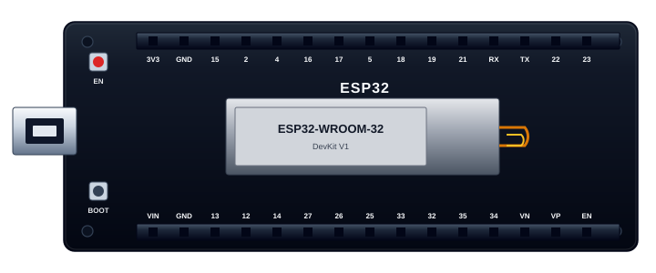

30 pins: power, ADC inputs, I2C on GPIO21 and GPIO22, and UART on GPIO1 and GPIO3. In the simulator, choose “ESP32 onboard LED blink (GPIO2)”. That sketch blinks the blue onboard LED. LED_BUILTIN is GPIO2 on this board.
Simulator
ESP32 DevKit V1 in the same circuit lab as the Arduino Uno. GPIO2 is the onboard LED. EN resets the board when tied to GND.

30 pins: power, ADC inputs, I2C on GPIO21 and GPIO22, and UART on GPIO1 and GPIO3. In the simulator, choose “ESP32 onboard LED blink (GPIO2)”. That sketch blinks the blue onboard LED. LED_BUILTIN is GPIO2 on this board.